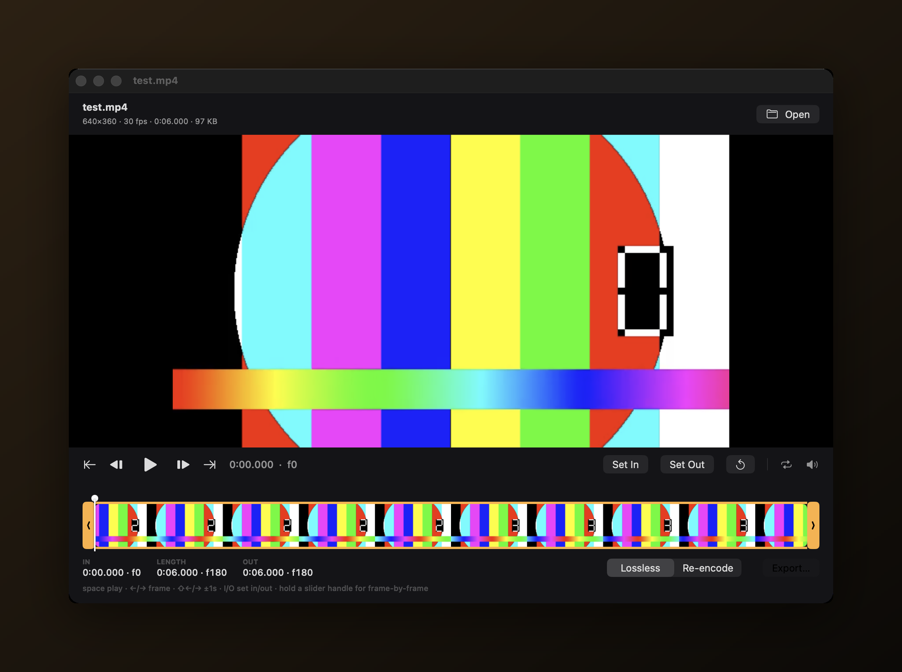

Snip
Trim and crop video on your Mac without opening a full editor. Drop a file in, drag the handles to the part you want, and export.

First launch (opening an unsigned app)
Snip isn't signed with an Apple Developer ID, so macOS blocks it the first time you open it. This is expected — you only need to do one of the following once, and it opens normally afterward.
1. Right-click to open. In Finder, Control-click (or right-click) Snip, choose Open, then click Open again in the dialog.
2. If macOS still won't let you (newer versions): open System Settings → Privacy & Security, scroll down to the message about Snip being blocked, and click Open Anyway. Confirm with Open Anyway (and Touch ID or your password if asked).
3. Terminal fallback. If neither works, remove the quarantine flag and open it normally:
/usr/bin/xattr -dr com.apple.quarantine /Applications/Snip.app(Adjust the path if you keep the app somewhere other than /Applications.)